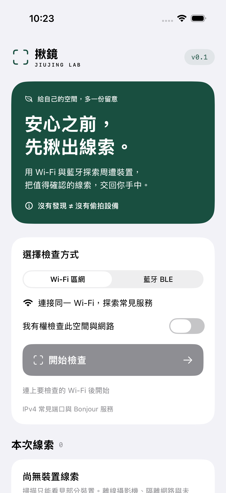

免費・開源・iOS 16+
安心之前，
先揪出線索。
陌生的房間，熟悉的不安。
用 Wi-Fi 與藍牙探索周遭裝置，
把值得確認的線索，交回你手中。
沒有發現，不代表沒有偷拍設備。

掃描資料
留在你的手機。
留在你的手機。
無帳號，直接開始無廣告與分析 SDK掃描結果不上傳MIT 開源授權
01 / 把檢查變得簡單
多一個工具，
多一份留意。
保護隱私，不該以付費或交出更多資料為代價。揪鏡讓你從周遭的數位線索開始，搭配實體檢查，逐步了解自己的空間。
- 01
確認你有權檢查
只在自己有權使用的空間與網路操作，選擇 Wi-Fi 或 BLE 模式。
- 02
讓線索浮現
查看裝置提供的服務或藍牙廣播。需要留意的紀錄會顯示具體原因。
- 03
人工確認，再做判斷
對照已知家電與設備用途，有疑慮時向管理者確認，先保護自己的安全。
02 / 兩種方式，觀察線索
把原因攤開，
讓你自己確認。
WI-FI
同一個網路，看見哪些服務？
探索同 Wi-Fi 的常見端口與 Bonjour 服務，查看可能與影像串流有關的線索。一般網頁服務也會出現，並不等於攝影機。
BLUETOOTH LE
附近的廣播，有什麼值得留意？
掃描 20 秒 BLE 廣播，以名稱規則提示待確認的裝置。名稱可以更改；訊號強弱也不代表裝置與你的距離。
03 / 隱私，從設計開始
保護你的資料，
不必先收集它。
04 / 把限制，也說清楚
沒有發現，
不代表沒有。
揪鏡提供待確認的線索，不能證明有偷拍，也不能證明空間安全。
離線設備可能看不見
只錄到記憶卡、未連網或未廣播的攝影機，可能完全不會出現。
網路並不是全貌
隔離網路、防火牆與逾時會造成遺漏。v0.1 區網掃描限 IPv4，大型網段只檢查部分範圍。
線索需要人工確認
合法家電也可能命中規則。不要自行拆卸設備；感到不安全時先離開並尋求協助。
揪鏡能判斷裝置廠牌或精確距離嗎？
不能。v0.1 不取得周邊裝置 MAC 位址，也不猜測廠商；BLE 訊號會受牆面、遮蔽物與硬體影響，不代表距離。
目前有相機、紅外線或 AI 辨識嗎？
沒有。v0.1 僅提供 Wi-Fi 區網與 BLE 廣播探索。其他偵測方式仍是研究方向，尚未提供。
偵測到陌生裝置後，應該怎麼做？
先對照場地內已知家電，向管理者確認用途。若仍有疑慮，先離開風險區域，避免拆卸或破壞設備，必要時在台灣撥打 110 求助。